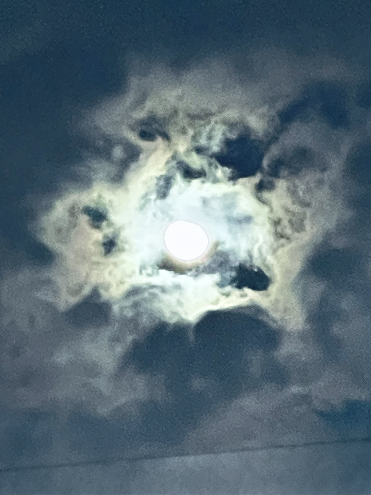

The Cat & Venus
“Nature exceeds Nurture.”

A cat fell in love with a handsome young man, and entreated Venus to change her into the form of a woman. Venus consented to her request and transformed her into a beautiful damsel, so that the youth saw her and loved her, and took her home as his bride. While the two were reclining in their chamber, Venus wishing to discover if the Cat in her change of shape had also altered her habits of life, let down a mouse in the middle of the room. The Cat, quite forgetting her present condition, started up from the couch and pursued the mouse, wishing to eat it. Venus was much disappointed and again caused her to return to her former shape.
The moral of the story — that nature often prevails over appearance — remains true today.